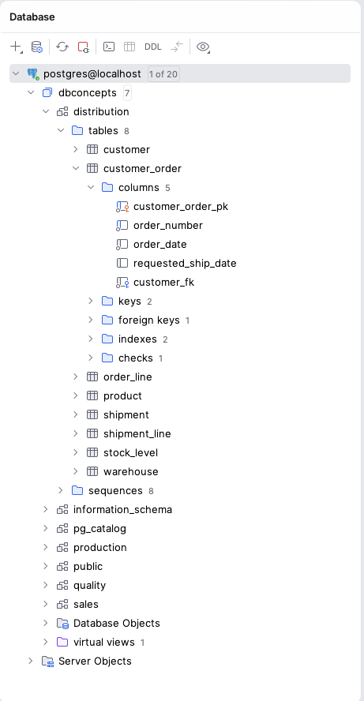
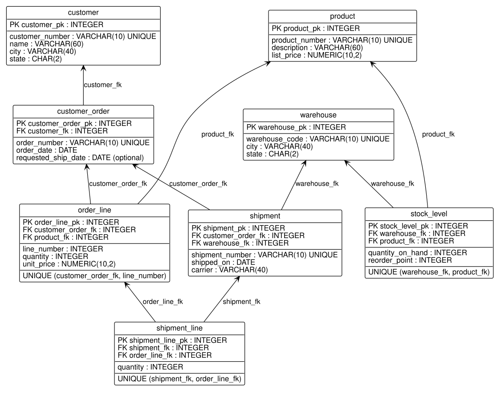

UPDATE distribution.customer
SET customer_pk = 'ten'
WHERE customer_number = 'C-1001';ERROR: invalid input syntax for type integer: "ten"
LINE 2: SET customer_pk = 'ten'
^After reading this chapter you should be able to:
Most engineers meet a database that someone else built. An intern is handed a connection to the plant’s order system and asked how many orders shipped late last quarter; a quality engineer needs the inspection results for one lot. In both cases the first task is the same: find out what the database holds, and how its parts fit together. This chapter presents the ideas that make that possible.
Chapter 1 described why industrial data belongs in a database and introduced HG Industries, the manufacturer of hand trucks and garden carts whose databases this book uses. This chapter presents the relational model, the way nearly every database in industrial use organizes its data. We begin with tables, rows, columns, and the values they may hold, and with the properties that set a table apart from a spreadsheet. We then take up keys, which identify rows and connect tables, and the integrity rules a database enforces to keep those connections sound. With those ideas in place, we write a database’s schema down in a compact notation that shows every table’s keys and how they connect, and we find that the database stores the same description of itself. We then explore a real database with the tools you will use throughout the book. The chapter closes with a brief look at the other ways databases organize data.
The chapter does not ask you to design anything. Every table in it already exists, and our job is to read it. Designing tables of your own begins in Chapter 5, after the SQL chapters have shown what a well-built database lets you do.
The examples use stages D1 and D2 of the book’s database for the early sections and stage D5 for the whole distribution schema. Section C.2 explains how to load a stage; loading through-d5.sql gives you every table the chapter mentions.
The chapter shows SQL statements so that the database itself supplies every result and every refusal. You are not asked to write SQL yet. A SELECT reads rows, an INSERT adds a row, an UPDATE changes the rows its WHERE names, and a DELETE removes them. Read each statement in three parts: the sentence before it says what it attempts, the statement does it, and the table or message after it is PostgreSQL’s reply. You need not decode the syntax; Chapter 3 teaches queries, and Chapter 8 teaches defining tables and changing their rows (Section 8.4).
This section presents the building blocks of the relational model: tables, their rows and columns, and the values a column may hold.
Codd (1970) proposed the relational model in 1970, and it has been the basis of commercial databases ever since. In the model, all data is held in relations. A relation has a fixed set of named attributes, and each attribute draws its values from a domain, the set of values that are allowed for it. Formally, a relation is a set of tuples, and each tuple holds one value for each attribute. That is, if a relation has the attributes of a customer, each tuple describes one customer.
In practice a relation is drawn and stored as a table. Each attribute is a column, and each tuple is a row. This book uses the words table, row, and column throughout, and it treats tuple and row as meaning the same thing. A table looks like a spreadsheet, but it obeys rules that a spreadsheet does not, and Section 2.1.1 states them.
Let’s look at a real table. HG Industries’ distribution department keeps a table of its customers. The following query asks for every column (the *) of every row of the table named after FROM. Queries are the subject of Chapter 3; for now, notice only what comes back.
SELECT *
FROM distribution.customer;| customer_pk | customer_number | name | city | state |
|---|---|---|---|---|
| 1 | C-1001 | Riverside Hardware | Fayetteville | AR |
| 2 | C-1002 | Summit Farm Supply | Springdale | AR |
| 3 | C-1003 | Cedar Creek Home Center | Tulsa | OK |
| 4 | C-1004 | Midtown Tool Supply | Joplin | MO |
| 5 | C-1005 | Prairie Garden Center | Fort Smith | AR |
| 6 | C-1006 | Lakeside Distributors | Springfield | MO |
| 7 | C-1007 | Tri-County Farm and Home | Bentonville | AR |
| 8 | C-1008 | Northgate Hardware | Little Rock | AR |
Table 2.1 shows the eight rows of the customer table in stage D1. Each row describes one customer, and each column records one fact about every customer: an internal key (customer_pk), the customer number the business uses, the customer’s name, and the city and state where it is located.
The structure of a table (its name, its columns, and their domains) is called its schema, and the rows it holds at a given moment are called its state. The schema changes rarely, when the database is redesigned; the state changes every time a row is added, changed, or removed. A database schema is the collection of all its tables’ schemas. In other words, the schema is what the database can hold, and the state is what it holds now. Section 2.2 shows why the difference matters when we look for keys.
This subsection presents the six properties that every relation has and that a well-built table keeps. A row holds one value in each column, and the place where a row and a column meet is called a cell, as in a spreadsheet. The six properties are:
For each property, we state what it says, see what it means for the customer table of Table 2.1, and see what goes wrong without it.
The first property concerns what one cell may hold. Notice in Table 2.1 that each value is a single item, one name or one state. A value that is one member of its column’s domain, rather than several values joined in one, is called atomic, and the relational model requires every value to be atomic. A column holding “Fayetteville, AR” would break that rule. A query for the customers in Arkansas would have to pick the state out of the text, and an entry typed as “Fayetteville AR” or “Fayetteville, Ark.” would slip past it. That is why the city and the state are separate columns.
Whether a value is atomic depends on its domain and on how it is used; how it looks does not settle it. Prairie Garden Center’s city in Table 2.1 is “Fort Smith”, two words with a space between them, and it is atomic. “Fort Smith” is one member of the domain of cities, and no query, rule, or sort ever needs “Fort” alone. Nor does atomic mean a single character: AR is two characters, one value, and no one ever needs the A alone. A date has a year, a month, and a day, yet it is one value of the date domain. Its data type defines those parts and keeps them well formed, so a query can ask for a date’s month (Section 3.5) and no date can have a 13th month. “Fayetteville, AR” joins members of two domains, a city and a state, in a text value whose parts the database does not know. Thus, the database cannot pick out the state reliably, and it cannot check that the state is a real one. The test is a question about use: does any query, rule, or sort need part of the value on its own, in a way the value’s domain does not supply? If so, the parts belong in separate columns.
The same test settles values that have a structure of their own. A telephone number that is always stored and searched whole is atomic, since nothing needs its area code alone. A location’s latitude and longitude are two values, because a question such as which warehouse lies north of Joplin, or which is nearest a customer, needs each one alone. An address is atomic only if nothing ever asks for its city or its ZIP code. Section 5.3.1 returns to such values when it models attributes that have parts.
The first property allows one thing besides an atomic value: a cell with no value at all. A NULL marks a value that is unknown or that does not apply. For example, an order placed without a requested ship date has NULL in that column. NULL is neither zero nor an empty string, and Section 3.3 explains how queries treat it. Every row of Table 2.1 has a value in every column, because each column of the customer table is declared to require one.
The first property has a companion that spreadsheets break just as often. Suppose that HG Industries recorded up to two telephone numbers per customer, in columns named phone1 and phone2. Each cell then holds one value, yet the two columns hold the same attribute, a telephone number, told apart only by position. Several columns that hold the same attribute are called a repeating group, and the relational model forbids them. A customer with a third number would need a new column, and a search for one number would have to look in every column of the group. The model records such facts as rows of a table of their own, one row per telephone number, and Section 7.4 returns to repeating groups when it defines first normal form.
The second property says that a column’s values all come from its domain. A domain is more than a data type, although in SQL the data type is its main expression. For example, the state column is declared CHAR(2), a string of exactly two characters. The domain of US state codes is smaller than that: it has about fifty members, and ZZ is not one of them. A database can narrow a column’s domain further with a rule that every value must pass, a CHECK constraint, which Chapter 8 presents. Thus, the data type is the first line of defense for a domain, and it is usually not the last.
The data type is enforced on every value. The customer_pk column is declared INTEGER. An UPDATE changes values in the rows its WHERE names; the following one tries to set Riverside Hardware’s customer_pk to the text 'ten'. PostgreSQL refuses it:
UPDATE distribution.customer
SET customer_pk = 'ten'
WHERE customer_number = 'C-1001';ERROR: invalid input syntax for type integer: "ten"
LINE 2: SET customer_pk = 'ten'
^Notice that the message names the type and the value, and points to the value in the statement. PostgreSQL refuses the statement for the type alone, before it considers anything else about the change (Section 2.3 shows that it refuses a new number in customer_pk too, for another reason). A refused statement changes nothing, so the table is as it was before. Without the second property, a column of quantities could hold 10, ten, and a dozen, and no sum or comparison over it would mean anything.
The third property says that each column of a table has its own name. A query finds a column by its name: city means the same column of the customer table whatever other columns the table holds. Two columns named city would make every mention of city ambiguous, and PostgreSQL refuses to create a table that has them. Suppose that a designer wanted both a billing city and a shipping city for each customer. The designer names each column for its role, billing_city and shipping_city, and every mention of either is then clear. A query result is more lenient than a table: a query may ask for the same column twice, and its result then has two columns with one name. Thus, the third property is enforced for the tables a database stores, and a query that repeats a name is best avoided.
The fourth property says that no two rows of a relation are identical. Each row states a fact (here, that a customer with this number, name, city, and state exists), and a fact stated twice is still one fact. Were Riverside Hardware’s row stored twice, a count of the customers in Arkansas would report six where there are five, and every sum over the rows would count its figures twice. In addition, the two copies could not be told apart: no condition in a query could pick out one of them and leave the other. Here SQL departs from the model. SQL does not require a table to be a true set, so a table with no key can hold two identical rows, which a relation never can. The keys of Section 2.2 are what prevent that, and every table in the book’s database has one. A query result has no key and may also repeat a row, and a query can ask for each different row only once (Section 3.1).
The fifth property says that the rows of a table have no order. A spreadsheet has a row 1 and a row 2; a table does not, and a database may return the same rows in a different order the next time you ask. When order matters, a query must ask for its rows in an order (Section 3.4). Suppose that someone treated the last row of the customer table as the newest customer. That meaning would vanish the first time the rows came back in another order. A fact that matters, such as the date a customer was added, belongs in a column of its own.
The sixth property says that the columns of a relation have no order either. Each column is known by its name (the third property), so name holds the customer’s name whether it is the third column or the fifth. Here SQL departs from the model again. A table keeps the order in which its columns were declared, and a query that asks for every column returns them in that order, as Table 2.1 shows. A statement that adds a row without naming its columns also depends on that order, matching its values to the columns by position. A new column changes what a query for every column returns. A table rebuilt with its columns in another order would send such a statement’s values into the wrong columns, or have it refused. Thus, a statement that must keep working as the table changes should name its columns, and a statement that adds a row should always name them.
Table 2.2 collects the six properties, what goes wrong without each, and where SQL departs from the model. Notice that the second and fifth properties hold in SQL as the model states them, and that each departure has a remedy in how you write a table or a query.
| Property | What goes wrong without it | Where SQL departs |
|---|---|---|
| 1. One atomic value or NULL per cell | A query must pick values out of text, and variants slip past it | PostgreSQL also offers array and document types, which the book uses only in its appendix on NoSQL (Section H.4) |
| 2. One domain per column | Sums and comparisons over the column mean nothing | None: the data type enforces the domain, and CHECK narrows it |
| 3. Unique column names | A mention of a column is ambiguous | A query result may repeat a name, as in SELECT city, city |
| 4. No identical rows | Counts and sums are inflated, and the copies cannot be told apart | A table with no key, and a query result, may hold identical rows; keys and DISTINCT restore the rule |
| 5. No order of rows | Meaning carried by position is lost when the order changes | None: order must be asked for with ORDER BY |
| 6. No order of columns | Meaning carried by position is lost when a column is added | A table keeps its declared column order, so SELECT * and an INSERT with no column list depend on it; name the columns |
The properties are easiest to see where they are broken. Table 2.3 shows how the same customers might be kept in a spreadsheet. Its rows are customers of Table 2.1, and its telephone numbers are invented, since the book’s database holds none.
| Customer | Name | Location | Phone 1 | Phone 2 |
|---|---|---|---|---|
| C-1001 | Riverside Hardware | Fayetteville, AR | 479-555-0101 | |
| C-1002 | Summit Farm Supply | Springdale, AR | 479-555-0144 | 479-555-0145 |
| C-1001 | Riverside Hardware | Fayetteville, AR | 479-555-0101 | |
| Missouri customers | ||||
| C-1004 | Midtown Tool Supply | Joplin | 417-555-0120 | |
| C-1006 | Lakeside Distributors | Springfield | 417-555-0188 |
Let’s walk through Table 2.3 one break at a time.
Undoing each break gives back the customer table. Splitting Location into a City column and a State column makes every value atomic. Moving the telephone numbers to a table of their own removes the repeating group, and the customer table of stage D1 holds no telephone numbers at all. Deleting the second Riverside Hardware row leaves each customer once. Finally, deleting the heading row and writing MO in the State cell of each Missouri customer puts the meaning of the heading into values. What remains has the columns of Table 2.1 except customer_pk, the internal key that Section 2.2 explains.
Taken together, the six properties say one thing: a table’s meaning lives in its values and its names, never in the position of a row or a column or in the layout of a sheet. That is what lets a query say what it wants (the customers whose state is MO) without saying how to walk through the rows to find them. It is also why a new column leaves a query that names its columns unaffected, and why the database is free to return rows in whatever order is quickest without changing an answer. One property takes more than care to keep: a table holds no identical rows only if it has a way to tell its rows apart, and that is the subject of keys.
This section presents keys: the columns that identify a row and, in another role, connect one table to another.
A table must give us a way to tell its rows apart. A superkey is a set of one or more columns whose values identify a row: no two rows of the table may ever have the same values in all of them. The set of all of a table’s columns is always a superkey, since two rows that agree in every column would be the same row. Superkeys usually carry more columns than they need, so the model asks for the smallest ones. A candidate key is a superkey from which no column can be removed without losing the property. That is, a candidate key satisfies two conditions:
The word never in the first condition is the important one. A candidate key is a rule about every state the table could ever be in, which makes it a fact about the business the table describes. The rows the table holds today can show that a set of columns is not a key, by containing two rows that agree on it; however, they can never prove that it is one.
Example 2.1 (Finding the candidate keys of the customer table) The system. HG Industries records each customer it sells to in the customer table of Table 2.1, which has the columns customer_pk, customer_number, name, city, and state.
The request. Which columns, alone or together, identify a customer?
Let’s examine each column against the eight rows of Table 2.1, and then against what we know about the business. The following table records the check.
| Column | Two rows share a value? | A rule of the business makes it unique? | Candidate key? |
|---|---|---|---|
customer_pk |
No | The database generates a different value for every row | Yes |
customer_number |
No | The company assigns each customer one number, never reused | Yes |
name |
No | No: two stores may share a name | No |
city |
No | No: a second customer may open in the same city | No |
state |
Yes (AR appears five times) | No | No |
Notice that the data rules out only state. The names and cities of the eight customers happen to be different, yet neither column is a candidate key, because nothing about the business stops a second hardware store from opening in Fayetteville. Indeed, the year of history in stage G adds a second customer in Springfield, Missouri. In contrast, customer_number is a key because the company promises it is: it is the identifier on every invoice.
The check. Each candidate key found has a single column, so the second condition holds automatically: there is no smaller set to try. The same condition settles the columns taken together. Any larger set that contains customer_pk or customer_number identifies a customer, but it is not minimal, so it is not a candidate key. The only sets left are combinations of name, city, and state, and no rule of the business makes any of them unique: two stores of the same name may open in the same city.
Interpretation. The customer table has two candidate keys, customer_pk and customer_number. A query that must find one customer should look it up by one of them. A report that groups customers by city is doing something else: it gathers customers together, and it never needs a city to single one out.
Where it breaks. If the company ever reused the number of a customer who had closed, customer_number would stop being a key, and every report that assumed it was one would silently merge two customers’ histories.
A table often has more than one candidate key, and the designer chooses one to be the primary key, the key by which the table’s rows are identified and referred to. The candidate keys not chosen are called alternate keys. In Example 2.1, the primary key is customer_pk and customer_number is an alternate key. The database enforces both: it rejects any row that would repeat a value of either. For example, when we tried to add a second customer numbered C-1001, PostgreSQL refused with this message:
ERROR: duplicate key value violates unique constraint "customer_customer_number_key"
DETAIL: Key (customer_number)=(C-1001) already exists.The two candidate keys of the customer table are of different kinds. A natural key is made of data that means something to the business, such as a customer number or a part number. A surrogate key is a value the database generates only to identify rows, such as customer_pk, and it means nothing outside the database. Almost every table in the book’s database has a surrogate primary key, named for its table with the suffix _pk, and keeps its natural key as an alternate key. Section 6.6 discusses when each kind is the better choice. For reading a database, it is enough to recognize both.
A key may also need more than one column. A key of several columns is called a composite key. For example, HG Industries numbers the lines of each order 1, 2, 3, and so on. A line number alone identifies nothing, since every order has a line 1; the order and the line number together identify one line. Thus, the pair (customer_order_fk, line_number) is a candidate key of the order_line table, which Section 2.4 shows.
The last kind of key connects tables. A foreign key is a set of columns in one table whose values must match the values of a candidate key in another table (or, occasionally, in the same table). The foreign key refers to the other table’s rows. Recall that each customer places orders. The following query lists the orders of stage D2, the stage in which the customer_order table first appears.
SELECT *
FROM distribution.customer_order;| customer_order_pk | order_number | order_date | requested_ship_date | customer_fk |
|---|---|---|---|---|
| 1 | SO-5001 | 2026-01-05 | 2026-01-12 | 1 |
| 2 | SO-5002 | 2026-01-07 | 2026-01-14 | 3 |
| 3 | SO-5003 | 2026-01-12 | NULL | 2 |
| 4 | SO-5004 | 2026-01-15 | 2026-01-22 | 1 |
| 5 | SO-5005 | 2026-01-21 | 2026-02-02 | 4 |
| 6 | SO-5006 | 2026-01-28 | 2026-02-04 | 6 |
| 7 | SO-5007 | 2026-02-03 | 2026-02-10 | 3 |
| 8 | SO-5008 | 2026-02-11 | NULL | 5 |
| 9 | SO-5009 | 2026-02-18 | 2026-02-25 | 7 |
| 10 | SO-5010 | 2026-02-24 | 2026-03-03 | 1 |
| 11 | SO-5011 | 2026-03-04 | 2026-03-11 | 6 |
| 12 | SO-5012 | 2026-03-10 | 2026-03-17 | 2 |
Table 2.5 shows the twelve orders placed in January through March 2026. Notice the last column, customer_fk. Its value in each row is the customer_pk of the customer who placed the order, so it is a foreign key that refers to the customer table. For example, order SO-5001 has customer_fk 1, and the customer whose customer_pk is 1 in Table 2.1 is Riverside Hardware. Notice also that orders SO-5003 and SO-5008 have NULL for their requested ship dates: those customers did not ask for a date.
Customer 1 appears three times in the customer_fk column, and customer 8 (Northgate Hardware) does not appear at all. That pattern, one customer with many orders and some customers with none, is what a foreign key records. The next section presents the rules that keep such references sound.
This section presents the two rules that every relational database enforces on its keys.
The first rule protects primary keys. The entity integrity rule states that no column of a primary key may be NULL. The reason is simple: a primary key is how a row is identified, and a row whose identifier is unknown cannot be found or referred to. PostgreSQL applies the rule automatically; declaring a column part of a primary key also declares that it may not be NULL.
The second rule protects foreign keys. The referential integrity rule states that every value of a foreign key must either match a value of the key it refers to or be NULL. In other words, a reference must point to a row that exists. An order that refers to customer 9 when there is no customer 9 would be an orphan: an order that no one placed. The database enforces the rule in both directions, as the following attempts on stage D2 illustrate.
First, suppose that we try to record an order for customer 9, who does not exist. An INSERT adds a row to the table it names, with the values it lists for the columns it lists:
INSERT INTO distribution.customer_order
(order_number, order_date, customer_fk)
VALUES ('SO-5013', '2026-03-12', 9);PostgreSQL rejects the new row and names the rule it would break:
ERROR: insert or update on table "customer_order" violates foreign key constraint "customer_order_customer_fk_fkey"
DETAIL: Key (customer_fk)=(9) is not present in table "customer".Second, suppose that we try to remove Riverside Hardware (C-1001), who has placed three orders. A DELETE removes the rows its WHERE names; this one names Riverside Hardware’s row:
DELETE FROM distribution.customer
WHERE customer_number = 'C-1001';Deleting the customer would leave its three orders pointing at nothing, so PostgreSQL refuses again:
ERROR: update or delete on table "customer" violates foreign key constraint "customer_order_customer_fk_fkey" on table "customer_order"
DETAIL: Key (customer_pk)=(1) is still referenced from table "customer_order".Notice what the second message says: the key is still referenced. The same statement for Northgate Hardware (C-1008), which has no orders, succeeds, because no row refers to it. Thus, referential integrity depends on the state of the database as well as on its schema.
Notice that the two attempts changed different tables. The first added a row to the table that holds the foreign key; the second removed a row from the table the foreign key refers to. A change to either table can break referential integrity, but not every change can. Table 2.6 considers each kind of change to the two tables of stage D2.
| Table | Change | Can it break the rule? | What the database can do |
|---|---|---|---|
customer |
add a row | No | Nothing is needed |
customer |
change customer_pk |
Yes | Refuse, cascade, set NULL, or set a default |
customer |
remove a row | Yes | Refuse, cascade, set NULL, or set a default |
customer_order |
add a row | Yes | Refuse |
customer_order |
change customer_fk |
Yes | Refuse |
customer_order |
remove a row | No | Nothing is needed |
Let’s read Table 2.6 one table at a time. A new customer is referred to by no order, so adding one is always safe; removing an order leaves no reference behind, so it is always safe too. An order that is added, or whose customer_fk is changed, may refer to a customer who does not exist. The only sound response is to refuse the change, as PostgreSQL did with order SO-5013.
The remaining rows change the table that is referred to. When a customer who has orders is removed, or its customer_pk is changed, the database has four possible responses. The designer chooses one for each foreign key when the table is defined:
NO ACTION, the default, or RESTRICT);customer_fk to the new value (CASCADE);customer_fk to NULL, so that they refer to no customer (SET NULL);customer_fk to the column’s default value, which must itself match a customer that exists (SET DEFAULT).In PostgreSQL, NO ACTION and RESTRICT both refuse; they differ only in when the check is made, which matters only inside the transactions of Chapter 9.
Almost every foreign key in the book’s database refuses: its definition names no response, so it takes the default. The exceptions cascade deletions from a whole to its parts, such as an order’s lines, which cannot exist without their order; Chapter 6 explains why. The foreign key of customer_order refuses, as the Riverside Hardware attempt showed. Setting NULL could never succeed in the book’s database, since every foreign key column in it is declared NOT NULL. In addition, the surrogate key customer_pk refuses any value we supply. PostgreSQL generates its values, and it rejects an attempt to set one:
UPDATE distribution.customer
SET customer_pk = 20
WHERE customer_number = 'C-1001';ERROR: column "customer_pk" can only be updated to DEFAULT
DETAIL: Column "customer_pk" is an identity column defined as GENERATED ALWAYS.Notice that the message allows one change: the column may be set to DEFAULT, which draws a new generated value. Nothing about a customer ever requires that, because the value means nothing outside the database. Thus, a surrogate key is not meant to change, and a reference to one never needs to follow a change. That is one reason for surrogate keys, which Section 6.6 takes up, and Chapter 8 shows how to declare each response. For reading a database, the lesson is that a foreign key is a promise the database keeps. When you query a table with a foreign key, every value in it that is not NULL has a matching row in the table it refers to, and a query can rely on that.
This section presents a compact way to write down a database’s schema: its tables, their keys, and the references that connect them.
Recall from Section 2.1 that a database schema is the collection of all its tables’ schemas. To read a database, we need that collection in front of us, with the keys of Section 2.2 marked. This book writes a database schema down in a compact text notation, which we call a relational schema. At a minimum, a relational schema gives:
A key of several columns is written in parentheses. Listing 2.1 gives the relational schema of stage D2.
customer (customer_pk, customer_number, name, city, state)
primary key: customer_pk
alternate key: customer_number
customer_order (customer_order_pk, order_number, order_date,
requested_ship_date, customer_fk)
primary key: customer_order_pk
alternate key: order_number
customer_fk references customer_pk in customer,
must not be NULLThe first entry of Listing 2.1 says that the customer table has five columns, that customer_pk is its primary key, and that customer_number is its alternate key: the keys found in Example 2.1. The last line of the customer_order entry is its foreign key. It says that customer_fk refers to customer_pk in the customer table and must not be NULL, so every order has a customer. Read in the other direction, the same line says that a customer may be referred to by any number of orders, including none.
Notice that the book’s key names do some of the work. A column ending in _pk is its table’s primary key, and a column ending in _fk is a foreign key named for the table it refers to, or sometimes for the role the referenced row plays (a bill of materials line names an assembly and one of its components, as assembly_fk and component_fk). The relational schema states the keys anyway, because a key of several columns, an alternate key, and a database named by someone else’s rules all need saying.
The minimal form leaves out what is needed to build the tables rather than read them. A complete relational schema adds each column’s data type and whether it may be NULL, the CHECK constraints that narrow each domain, and each foreign key’s response to deleting or updating the row it refers to (Table 2.6). Listing 2.2 gives the complete relational schema of the customer_order table.
customer_order
customer_order_pk INTEGER not NULL, generated
order_number VARCHAR(10) not NULL
order_date DATE not NULL
requested_ship_date DATE may be NULL
customer_fk INTEGER not NULL
primary key: customer_order_pk
alternate key: order_number
customer_fk references customer_pk in customer,
must not be NULL
customer_fk: on delete no action, on update no action
check: requested_ship_date >= order_dateThe column lines of Listing 2.2 confirm what Table 2.5 showed: requested_ship_date is the one column that may be NULL. The word generated on customer_order_pk says that the database generates its values, which is what makes it a surrogate key. The line that begins customer_fk: on delete records the response chosen for the foreign key, no action, which means refuse. The check line narrows the domain of requested_ship_date: a customer cannot ask for an order to ship before the order was placed. In other words, a complete relational schema holds everything needed to write the statements that create the tables, which Chapter 8 presents.
The relational schema of stage D5, the whole distribution schema, is too long for one listing, so it is given in two. Listing 2.3 gives the tables of orders and products, and Listing 2.4 the tables of warehouses and shipments.
customer (customer_pk, customer_number, name, city, state)
primary key: customer_pk
alternate key: customer_number
customer_order (customer_order_pk, order_number, order_date,
requested_ship_date, customer_fk)
primary key: customer_order_pk
alternate key: order_number
customer_fk references customer_pk in customer,
must not be NULL
product (product_pk, product_number, description,
list_price)
primary key: product_pk
alternate key: product_number
order_line (order_line_pk, customer_order_fk, line_number,
product_fk, quantity, unit_price)
primary key: order_line_pk
alternate key: (customer_order_fk, line_number)
customer_order_fk references customer_order_pk in
customer_order, must not be NULL
product_fk references product_pk in product,
must not be NULLwarehouse (warehouse_pk, warehouse_code, city, state)
primary key: warehouse_pk
alternate key: warehouse_code
stock_level (stock_level_pk, warehouse_fk, product_fk,
quantity_on_hand, reorder_point)
primary key: stock_level_pk
alternate key: (warehouse_fk, product_fk)
warehouse_fk references warehouse_pk in warehouse,
must not be NULL
product_fk references product_pk in product,
must not be NULL
shipment (shipment_pk, shipment_number, shipped_on, carrier,
customer_order_fk, warehouse_fk)
primary key: shipment_pk
alternate key: shipment_number
customer_order_fk references customer_order_pk in
customer_order, must not be NULL
warehouse_fk references warehouse_pk in warehouse,
must not be NULL
shipment_line (shipment_line_pk, shipment_fk, order_line_fk,
quantity)
primary key: shipment_line_pk
alternate key: (shipment_fk, order_line_fk)
shipment_fk references shipment_pk in shipment,
must not be NULL
order_line_fk references order_line_pk in order_line,
must not be NULLThe foreign key lines of Listing 2.3 and Listing 2.4 sort the eight tables into three groups. Three tables have none, so they refer to nothing: customer, product, and warehouse. Four refer only to those three or to each other: an order refers to a customer, an order line to an order and a product, a stock level to a warehouse and a product, and a shipment to an order and a warehouse. The last, shipment_line, refers to a shipment and to the order line it ships. Notice also the three alternate keys written in parentheses. The first, in order_line, is the composite key of Section 2.2, an order and a line number. The second, in stock_level, says that a warehouse holds at most one stock level for each product. The third, in shipment_line, says that a shipment ships a given order line at most once.
The tables of the book’s database also carry a schema name, the name of a group of tables within the database. The distribution tables belong to the schema distribution, so a query names the customer table distribution.customer, as the queries of this chapter have. The production and quality departments’ tables belong to schemas of their own, and Appendix C shows all of them.
The main use of a relational schema is to find where the answer to a question lives, before any query is written. The following example illustrates the process.
Example 2.2 (Tracing a request through the schema) The system. The distribution schema of Listing 2.3 and Listing 2.4.
The request. The sales manager asks: which customers have ordered the GC-300 steel garden cart?
The request names two things, customers and a product, so we begin by finding the tables that describe them: customer and product. Neither refers to the other, so we look for a path of foreign keys between them. The foreign keys of order_line refer to product and to customer_order, and the foreign key of customer_order refers to customer. Thus, the path runs from product to order_line, then to customer_order, and finally to customer. The columns along the path are the keys that connect each pair:
| Foreign key | Refers to |
|---|---|
order_line.product_fk |
product.product_pk |
order_line.customer_order_fk |
customer_order.customer_order_pk |
customer_order.customer_fk |
customer.customer_pk |
The check. Every step of Table 2.7 is a foreign key line of Listing 2.3, and every step matches a foreign key to the primary key it refers to, so each connection is guaranteed by referential integrity.
Interpretation. Four tables answer the question. A query needs the product’s number from product, the customers’ names from customer, and the two tables between them only to make the connection.
Where it breaks. The path finds customers who ordered the cart. A manager who asks which customers received one needs a different path, through shipment_line and shipment, because an order line that has not shipped is still an order.
Tracing a path of keys through a schema is the reasoning behind a join, the operation Section 3.6 presents. So far the schema has been given to us as a listing. The next section shows that the database holds the same description itself, where anyone can ask for it.
This section shows that a relational database stores the description of its own tables, and that the description is queried like any other data.
Recall from Section 1.3 that a DBMS keeps a catalog of metadata, the data about the data. The relational schemas of Section 2.4 are metadata: they say what tables exist, what columns each has, and which keys and rules apply, without listing a single customer. A database that stores this description inside itself, where people and programs can read it, is called self-describing. Every relational database is self-describing, and it holds the description the relational way, in tables.
Compare the sales office’s order log of Table 1.1. Its only description is its heading row. The heading “Qty” names a column, but nothing in the spreadsheet records that a quantity must be a positive whole number or that an order number identifies one order. Those rules live in the heads of the people who keep the log, and they hold only as long as those people are careful. In a database, the same rules are part of the catalog, and the DBMS reads them on every change.
The SQL standard defines a set of views of the catalog, called the information_schema, which every system that follows the standard provides. Its views are queried with the same SQL as the data. The following query asks the catalog of stage D5 which tables the distribution schema holds. Unlike the queries before it, it names the columns it wants after SELECT, keeps only the rows its WHERE allows, and sorts them with ORDER BY.
SELECT table_name, table_type
FROM information_schema.tables
WHERE table_schema = 'distribution'
ORDER BY table_name;| table_name | table_type |
|---|---|
| customer | BASE TABLE |
| customer_order | BASE TABLE |
| order_line | BASE TABLE |
| product | BASE TABLE |
| shipment | BASE TABLE |
| shipment_line | BASE TABLE |
| stock_level | BASE TABLE |
| warehouse | BASE TABLE |
Table 2.8 lists the eight tables of Listing 2.3 and Listing 2.4. Each is a BASE TABLE, a table that stores rows; the catalog also lists views, which Section 9.1 presents. The next query asks the catalog about the columns of one table. Its WHERE keeps the rows that meet both conditions joined by AND, and AS gives the column character_maximum_length the shorter name length in the result.
SELECT column_name, data_type,
character_maximum_length AS length,
is_nullable
FROM information_schema.columns
WHERE table_schema = 'distribution'
AND table_name = 'customer_order'
ORDER BY ordinal_position;| column_name | data_type | length | is_nullable |
|---|---|---|---|
| customer_order_pk | integer | NULL | NO |
| order_number | character varying | 10 | NO |
| order_date | date | NULL | NO |
| requested_ship_date | date | NULL | YES |
| customer_fk | integer | NULL | NO |
Notice that Table 2.9 holds the column lines of the complete relational schema of Listing 2.2, in the catalog’s words. The type character varying with a length of 10 is the VARCHAR(10) of order_number, spelled as the standard spells it, and is_nullable is YES only for requested_ship_date. Other views of the information_schema record the keys, the foreign keys, and the CHECK constraints, and Chapter 8 queries them. Thus, a relational schema can be produced from the catalog instead of being written by hand. The listings in this book were produced that way, by a program that reads the catalog of each stage.
Recall from Section 2.1 the difference between a schema and a state. The rows of the catalog are the database’s schema. Creating a table adds rows to the catalog; adding a customer does not. Thus, the catalog changes only when the database is redesigned.
The DBMS itself reads the catalog more than anyone. Before it runs a query, it looks up every table and column the query names. A query that names a column the table does not have is refused before a single row is read. The following query asks for order_no, but the column is named order_number:
SELECT order_no
FROM distribution.customer_order;ERROR: column "order_no" does not exist
LINE 1: SELECT order_no
^The tools read it too. The schema tree of DataGrip and DBeaver, the schema diagram they draw, and psql’s \d command, all presented in the next section, show what the catalog holds; so does a program that asks the database for a table’s columns, as Section 10.4 shows. That is what makes a database you have never seen readable: you can always ask it what it holds.
The catalog records structure, not meaning. It says that unit_price is a number with two decimal places that may not be NULL. It does not say whether the price is in dollars, whether it includes a discount, or how it relates to the product’s list price. That knowledge belongs in the design’s data dictionary, which Section 5.3 presents. PostgreSQL can store a sentence of description with each table and column (COMMENT ON COLUMN), and DataGrip and DBeaver show it beside the column; several other systems can as well, but the SQL standard does not define it. With comments, the catalog holds a little of the meaning too. Before we write queries, you need a way to open a database and look around in its catalog, which the next section provides.
This section presents the tools you will use to connect to a PostgreSQL database and explore it. Appendix A explains how to install each of them and how to load the book’s database into your server.
DataGrip and DBeaver are the tools this book uses. Both connect to many kinds of database, and both show a database the same way: a tree of the database’s schemas, each schema’s tables, and each table’s columns, keys, and constraints, beside an editor in which you write and run SQL. To connect to the book’s database, you create a data source (DataGrip) or a database connection (DBeaver) for PostgreSQL, giving the host localhost, the port 5432, the database name dbconcepts, and your user name. Once connected, expand the distribution schema and then its tables, and you will find the columns and keys of Listing 2.3 and Listing 2.4. The tree is drawn from the catalog of Section 2.5, which is why it is the same for every database you connect to.
Figure 2.1 shows the tree as DataGrip draws it, here inside IntelliJ IDEA, whose database tools are DataGrip’s. The connection to the server is at the top, the dbconcepts database below it, and its schemas below that. The distribution schema is open to its eight tables, and customer_order is open to its five columns, in the order of Listing 2.3. The icons mark customer_order_pk as the primary key and customer_fk as a foreign key. The folders below the columns count the table’s constraints: two keys (the primary key and the alternate key on order_number), one foreign key, and one check, which keeps the requested ship date from preceding the order date. PostgreSQL builds an index to enforce each key, which is why the tree also lists two indexes; this book does not cover indexes further.

customer_order Table
Notice that information_schema and pg_catalog appear in Figure 2.1 beside distribution, as schemas like any other. They are the catalog of Section 2.5, and the tool reads them to draw the tree. The production, quality, and sales schemas hold the other departments’ tables, which later chapters add. If your tree shows only some schemas, Section A.2 explains how to show them all. DBeaver’s tree, and the tree of a later version of DataGrip, may look a little different, but the outline is the same: a database, its schemas, their tables, and each table’s columns and constraints.
Both tools will also draw a schema diagram, a picture of the tables you select and the foreign keys that connect them. Figure 2.2 draws the tables of stage D5 the way these tools do. Each box is a table, with its key columns first, marked PK and FK, and its other columns below a line. Each column shows its SQL data type; UNIQUE marks an alternate key, (optional) marks a column that may be NULL, and a key of several columns is listed at the bottom as a UNIQUE (...) line. Each arrow is one foreign key, running from the table that holds it to the table it refers to and labeled with the foreign key column.

A schema diagram shows at a glance what the relational schema says line by line. For example, the arrow from customer_order to customer in Figure 2.2 is the line customer_fk references customer_pk in customer of Listing 2.3. For an unfamiliar database, you should ask a tool for its diagram before writing a query: reading it takes a few minutes and saves hours of guessing. Tools differ in how they draw a diagram, however, while a relational schema says the same things whichever tool produced it.
PostgreSQL itself comes with two tools. psql is a command-line program that connects to a database and runs SQL typed at its prompt or read from a file. It is the quickest way to run a script, and it is available wherever PostgreSQL is installed. For example, this command loads stage D2 of the book’s database, from the sql folder of the companion code:
psql -d dbconcepts -f sql/load/through-d2.sqlOn Windows, add -U postgres and give the superuser’s password when psql asks; Section A.4 gives the form for each system.
psql also has commands of its own, which begin with a backslash. The command \dt distribution.* lists the tables of the distribution schema, and at stage D2 it prints:
List of tables
Schema | Name | Type | Owner
--------------+----------------+-------+----------
distribution | customer | table | rossetti
distribution | customer_order | table | rossetti
(2 rows)The command \d distribution.customer_order describes one table: its columns, their types, and its constraints. The following output is what it prints at stage D2.
Table "distribution.customer_order"
Column | Type | Collation | Nullable | Default
---------------------+-----------------------+-----------+----------+------------------------------
customer_order_pk | integer | | not null | generated always as identity
order_number | character varying(10) | | not null |
order_date | date | | not null |
requested_ship_date | date | | |
customer_fk | integer | | not null |
Indexes:
"customer_order_pkey" PRIMARY KEY, btree (customer_order_pk)
"customer_order_order_number_key" UNIQUE CONSTRAINT, btree (order_number)
Check constraints:
"customer_order_check" CHECK (requested_ship_date >= order_date)
Foreign-key constraints:
"customer_order_customer_fk_fkey" FOREIGN KEY (customer_fk) REFERENCES distribution.customer(customer_pk)Notice that the output holds what the complete relational schema of Listing 2.2 says, in PostgreSQL’s words. psql reads it from PostgreSQL’s own catalog, the tables of the pg_catalog schema, over which the standard’s information_schema views are defined. The Nullable column marks the columns that may not be NULL; only requested_ship_date is blank, since it is optional. The primary key and the alternate key appear under Indexes, and the foreign key appears under Foreign-key constraints, with the table and column it refers to. Its response to a deletion is not printed, because it is the default, no action. The Owner column of the first listing, and the constraint names, will differ on your machine: the owner is whoever loaded the database, and PostgreSQL names a constraint that its creator did not name.
pgAdmin is PostgreSQL’s graphical tool, often installed with the server. It shows the same tree of schemas, tables, and columns as DataGrip and DBeaver, and it can run SQL. You may meet it on a machine where nothing else is installed; this book does not use it further.
This section places the relational model among the other ways databases organize data, so that you recognize them when you meet them.
The relational model is not the only way to organize a database, and it was not the first. Two questions separate the alternatives from it and from one another. First, where does the description of the data live: in a catalog, in each record, or only in the programs that use the data? Second, how is one record connected to another: by matching values, as a foreign key matches a primary key, or by a stored link that a program follows?
The databases that came before the relational model connected records by stored links. A hierarchical database arranges records in trees, each record under one parent. IBM’s IMS, the best known, was built in the 1960s to keep track of the parts of the Apollo program (Kleppmann 2017), and a bill of materials is a tree, so the fit was natural. The fit breaks when a part goes into two assemblies, since a record has only one parent: the part is stored twice, or reached through a special link. A network database, standardized by the CODASYL committee around 1970, lets a record have many parents, and a program finds data by following links from record to record. In both, a question nobody had planned for meant a new program to walk the links. The relational model replaced them because it connects tables by values, so any question can be asked in a query; Section 4.6 shows how SQL walks a bill of materials. IMS still runs in some banks and manufacturers.
An object database stores the objects of a program directly, each with an identity of its own, connected by references as the objects of a running program are. Its appeal is that the program’s classes and the database’s structure are the same thing, so nothing is translated between them. Object databases found uses in engineering design and telecommunications, but they never displaced relational ones. Instead, relational systems took on some of their features, and libraries now do the translation, as Section 10.6 shows. The class models of Chapter 5 describe objects in just this way, and Chapter 6 maps them to tables.
The most common alternatives today go by the name NoSQL, read “not only SQL”: document, key-value, wide-column, and graph databases, built for data spread over many machines and for data whose structure changes often. The document database is the one you are most likely to meet. It stores each record as a document, usually written in JSON, a text format of named fields in which a field may hold a list or another document. Listing 2.5 is order SO-5001 of stage D5 written as one JSON document, built from the database by a query.
{
"order_number": "SO-5001",
"order_date": "2026-01-05",
"customer": {
"customer_number": "C-1001",
"name": "Riverside Hardware",
"city": "Fayetteville",
"state": "AR"
},
"lines": [
{
"line_number": 1,
"product_number": "HT-100",
"description": "Two-wheel hand truck",
"quantity": 10,
"unit_price": 89.00
},
{
"line_number": 2,
"product_number": "GC-300",
"description": "Steel garden cart",
"quantity": 4,
"unit_price": 119.00
}
]
}Compare Listing 2.5 with Listing 2.3. The relational database holds this order in four tables connected by keys: one row of customer_order, one of customer, two of order_line, and two of product. The document holds it in one place, with the order’s lines nested inside it and copies of the customer’s and the products’ facts written in. A program that needs the whole order reads one document, without a join.
Notice two things about the document. First, every field carries its own name, so each document describes itself and no catalog is needed to read it. The cost is that nothing requires the next document to use the same names or the same structure; a misspelled field is simply a new field. Second, the description of the HT-100 is now stored in every order that includes one, which is the duplication of the order log of Section 1.1. Changing a product’s description means finding and changing every document that copies it. Thus, a document database suits data that is written and read whole, such as an order or a test record, better than facts shared by many records. Appendix H describes the four families of NoSQL databases, when each suits, and how PostgreSQL itself stores and queries JSON documents.
A relational database holds all of its data in tables. Each table has a fixed set of columns, each with a name of its own and each drawing its values from a domain. Every value is atomic: no query, rule, or sort needs a part of it that its domain does not supply. A value may be NULL when it is unknown or does not apply. A relation’s rows are never identical, and neither its rows nor its columns have an order. A SQL table needs a key to keep the first rule, and it keeps the order in which its columns were declared, which a statement should not depend on. Thus, a table’s meaning lives in its values and names, never in position or layout.
A table’s schema is its structure, and its state is its current rows. The schema changes when the database is redesigned; the state changes with every change to its rows. Keys and integrity rules are part of the schema, which is why they hold for every state.
Keys identify rows, and the business decides what the keys are. A candidate key is a smallest set of columns that no two rows may ever share. The data can show that a set of columns is not a key, but only the rules of the business can make one a key. The designer chooses one candidate key as the primary key, and the others become alternate keys; in the book’s database, almost every primary key is a surrogate key, and each natural identifier is an alternate key.
Foreign keys connect tables, and referential integrity keeps the connections sound. A foreign key’s values must match a row of the table it refers to, or be NULL. A change can break the rule by adding a reference to a missing row, or by removing or changing a row that is still referred to. The database refuses the first kind; for the second, the designer chooses whether it refuses, cascades, sets NULL, or sets a default.
A relational schema is the map to read before writing a query. It lists every table’s columns and keys, and a line for every foreign key that names the table it refers to. Following those lines from one table to another finds the tables that connect them, which is the reasoning behind the joins of Chapter 3. A complete relational schema adds what is needed to build the tables, and a schema diagram draws the same map as a picture.
A relational database is self-describing. Its catalog of metadata (the tables, columns, keys, and rules) is stored in the database and queried with SQL through the standard information_schema. The DBMS reads it to check every query, and every tool and program that explores a database reads it too. The catalog records structure; the meaning of the data belongs in the design’s data dictionary.
Other databases organize data in other ways. Hierarchical and network databases connected records by stored links that programs followed. Object databases store a program’s objects as they are. Document databases store each record whole, with its own field names, nesting what a relational database spreads over several tables and copying what it stores once.
With a database connected and its schema in hand, you are ready to ask it questions. Chapter 3 presents the SQL SELECT statement, beginning with a single table and building to queries that follow the paths of this chapter across many.
Exercise 2.1 Match each term on the left with the phrase on the right that defines it.
| Term | Definition |
|---|---|
| a. domain | 1. a candidate key the designer has chosen to identify rows |
| b. superkey | 2. the rows a table holds at one moment |
| c. candidate key | 3. the set of values a column may hold |
| d. primary key | 4. a set of columns that no two rows may share |
| e. alternate key | 5. a smallest set of columns that no two rows may share |
| f. state | 6. a candidate key that was not chosen as the primary key |
Exercise 2.2 Mark each statement true or false, and correct each false one.
Exercise 2.3 A clerk at HG Industries keeps the stock of its two warehouses in the spreadsheet of Table 2.10. Its quantities come from the stock_level table of stage D4 (Listing 2.4); its bin locations are invented. The clerk knows that the first Quantity column is the quantity on hand and the second is the reorder point.
| Product | Quantity | Quantity | Bin 1 | Bin 2 |
|---|---|---|---|---|
| Fayetteville warehouse | ||||
| HT-100 Two-wheel hand truck | 120 | 40 | A-12 | |
| GC-300 Steel garden cart | 18 | 25 | B-03 | B-04 |
| Tulsa warehouse | ||||
| HT-100 Two-wheel hand truck | 60 | 30 | C-01 | |
| GC-400 Poly garden cart | none | 5 | C-07 | |
| GC-400 Poly garden cart | none | 5 | C-07 |
Exercise 2.4 The warehouse table of stage D4 has the columns warehouse_pk, warehouse_code, city, and state, and holds two rows: W-FAY in Fayetteville, Arkansas, and W-TUL in Tulsa, Oklahoma. HG Industries assigns each warehouse a code that is never reused, and it could open a second warehouse in a city where it already has one. Identify every candidate key of the table, its primary key, and its alternate keys, and explain why city is not a candidate key even though the two rows have different cities.
Exercise 2.5 Using Listing 2.3, answer these questions about the order_line table.
line_number alone not a candidate key?Exercise 2.6 The database is at stage D2 (Listing 2.1 and Table 2.5). For each change below, state whether PostgreSQL accepts or rejects it, and which integrity rule or key decides.
customer_fk of order SO-5002 to 12.Exercise 2.7 At stage D4, the stock_level table refers to the warehouse table through warehouse_fk (Listing 2.4), and each of the two warehouses holds four stock levels.
warehouse and stock_level tables.warehouse_fk had been declared to cascade deletions. What would removing W-TUL do at stage D4? Stage D5 adds the shipment table, whose warehouse_fk also refers to warehouse (Listing 2.4). Why might the company regret the same choice on shipment.warehouse_fk?warehouse_fk had been declared to set NULL. What would happen when W-TUL is removed, and why?Exercise 2.8 Using Listing 2.3 and Listing 2.4, list the tables, and the key columns that connect them, needed to answer each request. Do not write any SQL.
Exercise 2.9 Connect to the book’s database with DataGrip or DBeaver, load stage D5, and find the stock_level table in the distribution schema. List its columns with their data types, its primary key, its foreign keys and the tables they refer to, and its other constraints. Then write the complete relational schema of stock_level in the form of Listing 2.2, and compare it with the stock_level box of Figure 2.2. What does the relational schema say that the box does not?
Exercise 2.10 Open the orders, order_details, products, and shippers tables of the Northwind database of Section C.11, loaded with the book’s loader (Section A.6), in DataGrip or DBeaver, and read their definitions.
orders.customer_id may be NULL. What would an order with no customer mean, and what would you ask the business before allowing it?Exercise 2.11 The query of Table 2.9 lists the columns of customer_order at stage D5. Change it to list the columns of order_line instead, run it against stage D5, and compare the result with the order_line entry of Listing 2.3.
order_line may be NULL?unit_price, which is declared NUMERIC(10,2). Look through the columns of information_schema.columns in DataGrip or DBeaver, and name the two that record the 10 and the 2.Exercise 2.12 A process engineer keeps a log of gauge calibrations in a spreadsheet whose headings are Gauge, Date, Standard, Reading, and Technician. Each row records one calibration of one gauge against a reference standard.
Exercise 2.13 Suppose that HG Industries stored every order of stage D5 as one JSON document in the form of Listing 2.5, and nothing else.
product table of stage D5 but has never been ordered. Where would its description and list price be stored if the orders were the only documents? Which problem of Section 1.1 is this?